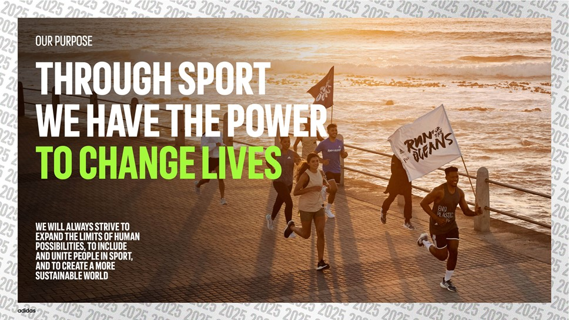
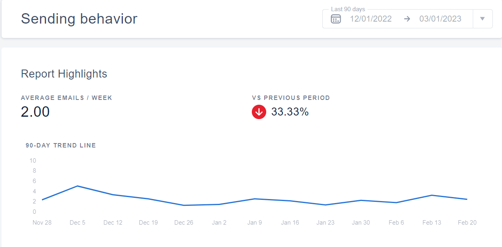
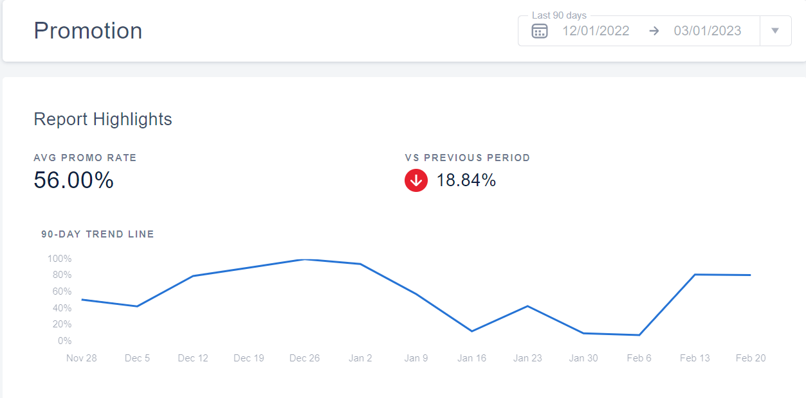
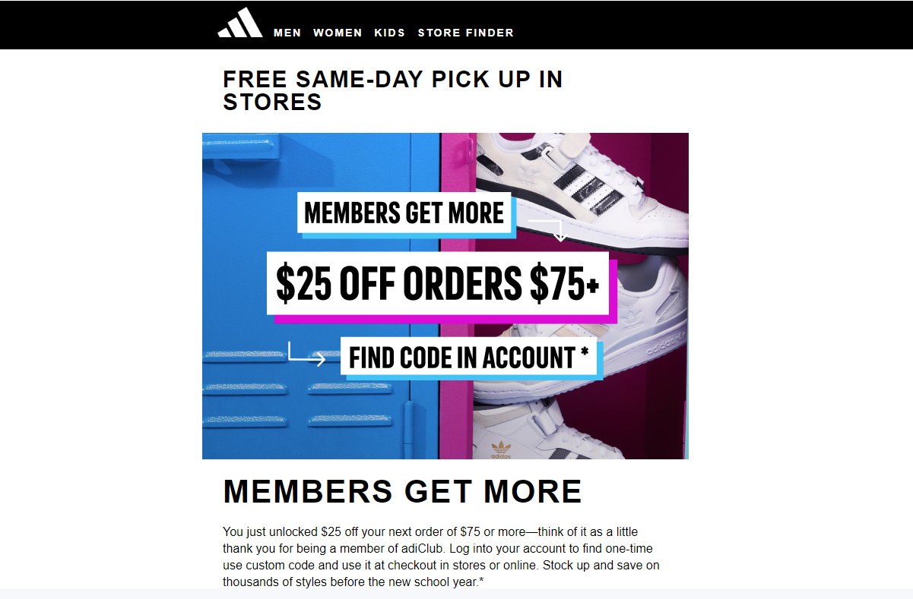
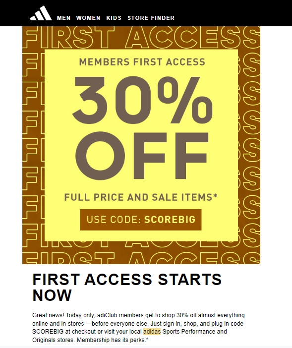
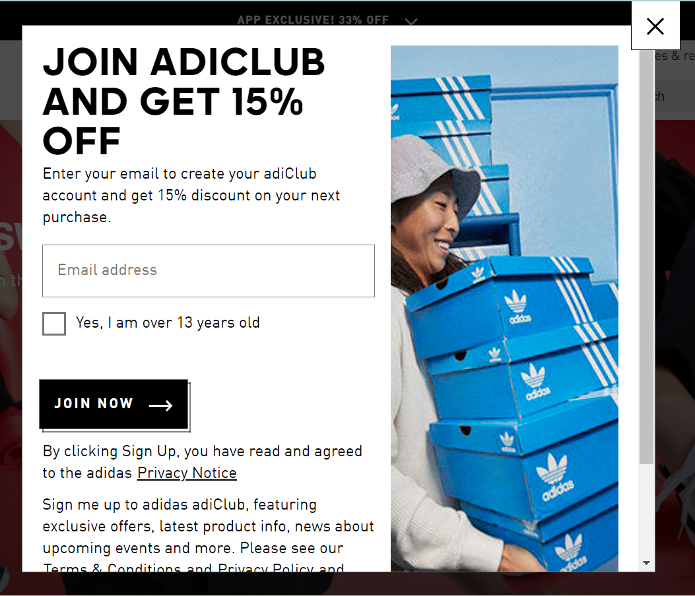
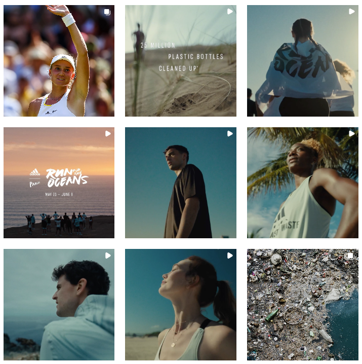
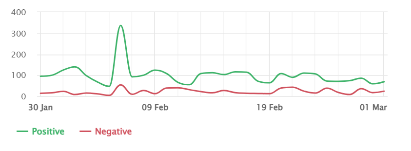

MKT/IMS 419 - Homework 1
About Adidas
Headquartered in Herzogenaurach, Bavaria, Germany, Adidas is a multinational corporation known as one of the most popular sports brands in the world. The brand was founded in 1924 by Adi Dassler and his brother Rudolf, hence the original name Gebrüder Dassler Schuhfabrik (“Dassler Brothers Shoe Factory”). However, in 1947, the two brothers split after their relationship went south, leading to Rudolf leaving and creating Puma, which later became one of Adidas’s competitors. In 1949, the brand was registered as ‘Adi Dassler adidas Sportschuhfabrik’ by Adi Dassler, marking the born of Adidas.



Adidas emphasizes that its core values are rooted in sports – that is, ‘through sports we have the power to change lives.’ This is also incorporated into the brand’s mission – ‘to be the best sports brand in the world’ and the stated attitude – ‘impossible is nothing.’
Email Marketing
Too often, too many emails
Since July 26, 2022, when I first purchased a pair of Adidas shoes and registered an account on their website, they have sent me 139 emails, mostly one email at a time, but sometimes 2-3 emails on the same day when a special holiday/event is around the corner (days with more emails have darker color in the chart below), summing up to about 4-5 emails per week on average. From a customer’s point of view, this is way too often for email marketing. I believe the optimal frequency should only be about 2-3 emails per week at maximum to encourage purchases with discounts but not cheapen the brand.

Compared to the brand’s general sending behavior and promotion data from MailCharts it seems they are doing just the right amount on average.


CTA, with little personalization
Almost if not all of the emails I received from Adidas are CTAs (Call to Action – urging customers to make purchases, often with offers/discounts to make the deals more appealing). Most of these emails could be categorized into the following:
New items arrival
Member discounts
Holiday discounts


If it’s not for me being a college student living on a student budget, which makes me an economic shopper, these offers are no more than ordinary marketing emails. They are not highly personalized to me as a customer nor trying to get my attention on other aspects of the products other than prices. Given that I do receive more promotional emails than the brand’s average sending behavior as demonstrated above, this could possibly be because they know I would not buy anything at full price, hence the influx of discounts and promotions. That being said, I do appreciate their efforts in testing different subject lines and times of day. This may involve A/B testing as a methodology to determine the better elements for a more effective marketing email campaign.
Mail list & PII data
I believe Adidas builds its own mail list by giving out member discounts for those who register using their emails. This process is fairly easy as the sign-up window would pop up for anyone visiting their official website. By having this process simple and quick, Adidas can attain high quality and niche PII (Personal Identifiable Information) from potential and recurring customers who are actually interested in the brand and purchasing its products.

CAN-SPAM laws complied
The CAN-SPAM Act of 2003 (Controlling the Assault of Non-Solicited Pornography And Marketing Act of 2003) is a law managed by the Federal Trade Commission to set the rules and regulations for sending commercial emails. I believe Adidas is following this law at its best from what I can see:
- They don’t use false/misleading headers.
- They don’t use deceptive subject lines.
- They identify the message as an advertisement
- The opt-out option is clearly displayed at the bottom of each email
Social Media
Strong presence across major SM platforms
Adidas has a large number of followers on various social media platforms, enabling the brand to scale its influence by reaching and interacting with a wide range of audiences:
Engaging Content & Positive Sentiment
Adidas invests care and efforts in its social media presence as every digital product from the brand is engaging, polished, and professional. It communicates the brand’s core values through each and every single post, promoting the brand’s image and awareness.

Data from BRAND24 shows that the brand is reaching millions of people and receiving mentions from hundreds if not thousands of people every day. The overall sentiment score is positive, suggesting that its content is welcomed by its audience, allowing the brand to stay engaged and relevant to the general customers.

36 Social Media Rules
In general, Adidas follows the 36 rules of social media pretty well as highlighted in a few below:
#17: Update your page or delete it.
#29: People don’t want to shop where they socialize.
#14: Everyone’s an influencer.